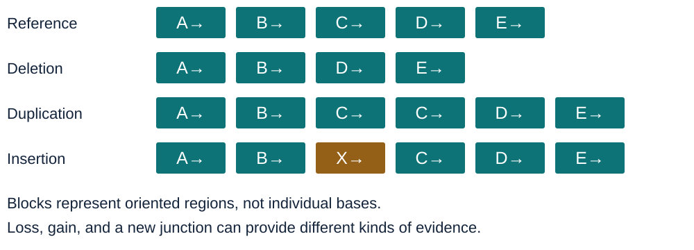
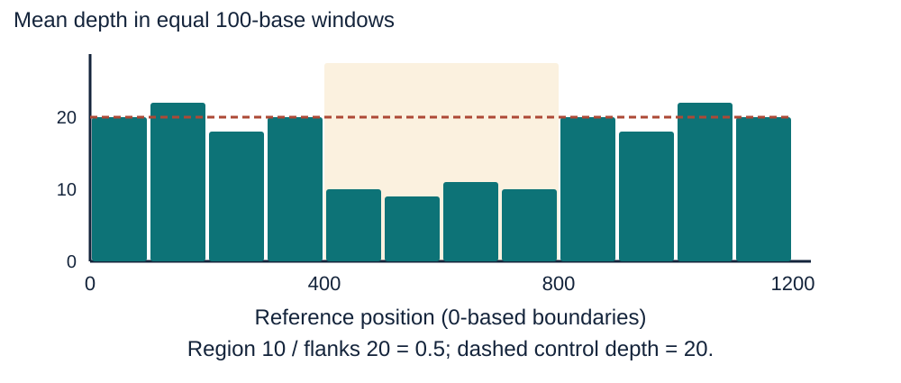
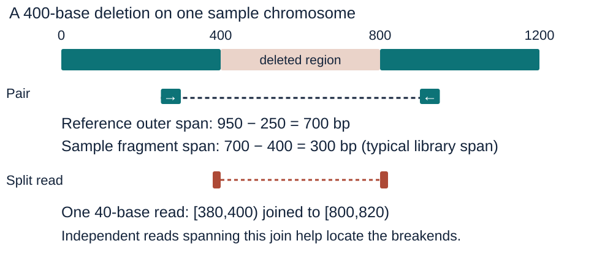

00–20 / From alignments to variantsWhat does a variant call claim?
Mapping places reads against a supplied reference; assembly reconstructs sequences from relationships among reads. Variant calling asks a further question: which differences between the sample and the reference are supported by the sequencing data? A mismatch in one alignment is a candidate observation. It might reflect a real sequence difference, a sequencing error, or a read placed at the wrong location.
We will follow a synthetic site on a reference sequence named toy. The reference base at position 101 is A, and several reads contain G there. This is a candidate single-nucleotide variant (SNV). We first check the observations, then compare possible genotypes, and finally describe the call in a VCF record. Later, we ask how the same reasoning changes when hundreds of bases are missing or a segment has a different orientation.
Keep three quantities separate. The alternate-read fraction describes the reads we counted. The genotype describes the alleles inferred for the sample. A biological consequence describes what a difference might do, such as altering a protein sequence. A convincing genotype does not by itself establish a biological effect, and the reference allele is not automatically the normal or beneficial allele.
Our genotype and copy-number examples assume a diploid sample: two chromosome copies at the region under discussion. The observations are invented so that we can inspect every step. By the end, you should be able to trace a base through a BAM alignment, explain a changed allele fraction after filtering, compare genotype predictions, and identify which observations support a proposed structural change.
Which observations support a sequence difference, and which alternative explanations do we still need to test?
20 min opening · 35 min pileups · 25 min genotypes and indels · 10 min break · 45 min structural variants · 25 min VCF · 20 min recap and handoff = 180 minutes.
Activities: filter reads · compare genotypes · rearrange sequences · interpret depth · read VCF coordinates. All observations are synthetic; activity settings reset when the page reloads.
Opening continued / BAM recordsBAM records locate reads on a reference
FASTQ stores read sequences and per-base quality scores without specifying their placements. SAM represents read and alignment information as text; BAM stores the same logical information in compressed binary form. A BAM file can contain both mapped and unmapped records. Its header identifies the reference sequences and can describe read groups and processing history.
Sorting mapped records by reference coordinate puts nearby alignments together. An index then lets software retrieve records overlapping a requested interval without scanning the entire file. Sorting and indexing organize access to the observations; they do not decide which variants are present. The SAM/BAM specification defines the fields and coordinate conventions.
Follow one G observation
Consider these selected fields from a forward alignment. This is a field summary, not a complete SAM line:
RNAME POS MAPQ CIGAR SEQ QUAL
toy 99 60 5M TCGAT DDDDDRNAME names the reference and POS=99 gives the 1-based leftmost aligned position. The CIGAR string 5M aligns five read bases with five reference bases, covering positions 99–103. The third read base, G, therefore aligns at position 101. The M operation permits both matches and mismatches; it does not say that all five letters agree with the reference.
MAPQ=60 describes confidence in the alignment's placement. QUAL describes the individual reported bases: here each D encodes Phred Q35. A read can have confidently reported letters but an uncertain placement in a repeated region. These are different sources of uncertainty, which is why we will filter both base quality and mapping quality.
Reference positions and Python indices
SAM positions start at 1. Python indexing starts at 0, and pysam's numeric interval arguments use a start-inclusive, stop-exclusive interval. Thus positions 99–103 correspond to [98, 103): the length is 103 − 98 = 5. To retrieve alignments overlapping position 101 with pysam, use fetch("toy", 100, 101). An overlapping alignment still needs its CIGAR inspected before you can say which read base, if any, covers that position.
Insertions consume read bases without advancing along the reference; deletions advance along the reference without consuming read bases. Consequently, subtracting the alignment start from a reference position is not a general way to find the read base. A pileup or an aligned-pairs iterator follows the CIGAR operations for you. The Week 2 CIGAR example provides a refresher, and the additional BAM notebook explores these operations in Python.
20–55 / Read evidenceA pileup makes the observations countable
A pileup groups aligned observations at one reference position. At our A→G candidate, twelve independent synthetic fragments contribute six A and six G observations. The retained base depth is 12, and the alternate-read fraction is 6 / (6 + 6) = 0.5. This number summarizes the selected observations; it is not yet a genotype call.

Quality filters change the denominator
Phred quality relates an estimated error probability p to a score through Q = −10 log₁₀(p). Q10 corresponds to p=0.1; Q20 corresponds to p=0.01. Base quality concerns the reported letter, while mapping quality concerns the placement. In this exercise we retain an observation only if its base quality is at least 20 and its mapping quality is at least 30. These are illustrative settings, not a universal filtering prescription.
Worked example: site B
Site B contains eight A observations with base Q35 and mapping Q60, four G observations with base Q10, and two further G observations with mapping Q5. Before filtering, the G fraction is 6 / 14 ≈ 0.429.
The four low-base-quality G observations fail the first condition. The other two G observations fail the mapping condition. All eight A observations pass, so the retained G fraction is 0 / 8 = 0. The denominator is eight because we are describing the retained observations.
If every observation is filtered out, the fraction is undefined: 0 / 0 is not evidence for an all-reference sample. The notebook represents this missing fraction with None.
Equal fractions can hide different support
Sites A and C both retain six A and six G. At A, the six G observations are split three per alignment strand. At C, all six G observations occur on forward alignments. The counts alone hide this difference. Strand imbalance prompts us to inspect the local alignments and ask whether independent reverse-oriented fragments also support G; it does not prove that the candidate is an error.
Also ask what was counted. Two overlapping mates can observe the same fragment, and duplicate records can represent repeated measurements of one input molecule. Treating every record as an independent observation can exaggerate support. Our small count example assumes independent fragments; the BAM practical makes record flags and filtering decisions visible.
Predict → change a setting → explain
Filter the same reads
Predict which G observations survive, then change one threshold.
At Q20/MQ30, B retains eight A and no G. A and C both retain six A and six G, but only A has G on both strands. D has no retained observations at base Q30.
Try site B with all reads visible, then restore Q20/MQ30. Next compare A and C. Explain why a fraction of 0.5 does not capture the difference in strand support.
55–80 / Genotypes and indelsA genotype predicts the observations
At a diploid site with one reference and one alternate allele, 0/0 denotes two reference alleles, 0/1 one of each, and 1/1 two alternate alleles. If both copies are sampled equally, a heterozygous A/G genotype predicts roughly half A and half G reads. A finite sample need not divide exactly in half.
To compare genotypes, we need a model of how each one could produce the observed reads. In our simplified binary model, an error flips A↔G with probability e=0.01. We assume independent observations and correct mappings. The probability q of observing G is then 0.01 under 0/0, 0.5 under 0/1, and 0.99 under 1/1.
Worked example: six A and six G
For a particular set of r A observations and a G observations, the likelihood is L = (1 − q)r qa. With r=6 and a=6, the all-reference genotype must explain six G observations as errors. The heterozygous genotype predicts each A or G observation with probability 0.5.
0/0: L = 0.99⁶ × 0.01⁶ log₁₀(L) ≈ −12.026
0/1: L = 0.5¹² log₁₀(L) ≈ −3.612
1/1: L = 0.01⁶ × 0.99⁶ log₁₀(L) ≈ −12.026The largest likelihood belongs to 0/1. Logarithms make very small products easier to compare; a less negative log-likelihood is larger. If we modeled unordered counts, a shared binomial coefficient would multiply all three likelihoods and leave their relative comparison unchanged.
One A and one G have the same alternate fraction as six A and six G, but provide less separation between genotype predictions. With no observations, every candidate has the same likelihood. This model also gives identical results for sites A and C because it ignores strand. Its bars show likelihood relative to the best candidate, not posterior genotype probabilities or calibrated VCF quality scores. Posterior probabilities would additionally require genotype priors.
Predict → change a setting → explain
Compare genotype predictions
Predict the best-fitting genotype. Compare 1 A + 1 G with 6 A + 6 G.
Bars: likelihood / best likelihood, not posterior probabilities. Independent binary A↔G errors; correct mappings; no priors.
With six A and six G, log₁₀ likelihoods in the binary e=0.01 model are −12.026, −3.612, and −12.026. No observations make all candidates tie.
Before the break / Local alignmentAn indel changes the alignment context
An insertion or deletion changes the correspondence between read and reference positions. Consider the reference CAAAG and a sample sequence CAAG. Removing any one of the three adjacent A bases produces the same sample sequence. Several gap placements therefore describe the same allele:
Reference: C A A A G
Alignment: C - A A G
or: C A - A G
or: C A A - GThe sequence difference is clear, but these strings do not identify a unique historical A that was removed. Equivalent indel representations should be normalized before comparing variant records. Otherwise, two records at different positions may appear to disagree even though they describe the same resulting sequence.
This also explains why inspecting only one pileup column can be misleading near an indel. A gap shifts the correspondence of neighbouring bases. Comparing plausible local sequences and their alignments can explain several apparent mismatches with one insertion or deletion. When we reach VCF, we will write a deletion as an explicit replacement of a reference allele.
80–90 / Ten minutesBreak
After the break: examine how sequence content and orientation change, then use depth and junction evidence to test a proposed rearrangement.
90–135 / Structural variationStructural variants change content and arrangement
Structural variants involve larger sequence changes, conventionally on the scale of roughly 50 bases or more. To reason about their arrangement, let A–E stand for long sequence blocks. Arrows show orientation relative to the reference. A breakpoint joins sequence that is not adjacent in that orientation in the reference.

A deletion of C joins B directly to D. A tandem duplication creates a new C-to-C join. An insertion places a new block X between existing neighbours. These changes affect sequence content, but a depth change alone cannot tell us the exact arrangement or the sequence of an inserted block.
Orientation can change without a copy-number change
Inverting the C–D segment turns A→ B→ C→ D→ E→ into A→ B→ D← C← E→. Both the order and the orientation of the inverted blocks change. A balanced inversion preserves their copy number, so ordinary depth can remain unchanged. Reads crossing the new joins can reveal the reversed orientation.
A reciprocal translocation exchanges segments between chromosomes. For example, a join between a block from chromosome 1 and a block from chromosome 2 can be supported by reads spanning that new adjacency. A balanced exchange need not change total copy number either. Thus a normal depth profile cannot rule out a rearrangement. See the GATK guide to structural-variant types and evidence.
Predict → change a setting → explain
Change the sequence arrangement
Choose a change. Predict whether total copy number must change.
Reference A→ B→ C→ D→ E→. Deletion removes C; duplication repeats it; inversion gives A→ B→ D← C← E→. A balanced inversion need not change depth.
Structural variation continued / Junction evidenceCombine depth with evidence of a new join
Depth asks how much sequence was sampled
We divide a synthetic region into equal 100-base windows and calculate the mean depth in each. Four windows within [400,800) have depths 10, 9, 11, and 10, giving a regional mean of 10. The surrounding windows have mean depth 20. The regional-to-flanking depth ratio is therefore 10 / 20 = 0.5.

Under uniform sampling of a diploid sample, losing one of two copies predicts roughly half the usual depth. Gaining one copy predicts roughly 3 / 2 = 1.5 times the usual depth. These expectations depend on comparable sampling and mapping. Poor mapping in a repeat or a coverage bias can lower observed depth even when the sample still contains both copies.
Read pairs ask which reference regions belong to one fragment
Suppose the library usually contains fragments about 300 bases long. A fragment crossing a 400-base deletion is still about 300 bases long in the sample, but its ends align across about 700 reference bases: 300 + 400 = 700. An unexpectedly large reference span can therefore support a deletion. In real libraries, fragment lengths vary, so we compare a pattern of credible read pairs with the library's usual span distribution.
Split alignments can locate the new adjacency
A read crossing the deletion junction may align in two pieces: one immediately before reference boundary 400 and the other immediately after boundary 800. The sample joins those flanks because the intervening reference segment is absent. Such split alignments can locate the junction more precisely than coarse depth windows.

Now compare two cases with the same half-depth profile. In one, independent read pairs and split alignments support the expected deletion junction. In the other, only depth is available. The second case leaves deletion and mapping loss unresolved. Useful next observations include uniquely placed fragments spanning the candidate junction, or longer reads that cross the region and establish its arrangement.
Predict → change a setting → explain
Ask what evidence distinguishes the cases
Use depth first. Then reveal the junction evidence and revise your explanation.
Junction evidence is hidden. What could explain this depth?
Cases 1 and 2 have the same 0.5 depth ratio; only case 1 supplies junction support for a deletion. Case 3 has a 1.5 ratio and tandem-junction support. Case 4 has a 1.0 ratio and inversion-junction evidence. All observations are invented.
Reveal the junction evidence after making a depth-only prediction. Cases 1 and 2 have the same ratio but different supplied support. Case 4 illustrates why copy-number-neutral changes need orientation or junction evidence.
135–160 / Variant recordsA VCF record describes an allele replacement
Variant Call Format (VCF) records a reference location, one or more alternate alleles, and associated information. The header defines annotations and sample fields. For our two simple records, read the reference and alternate alleles first, then the genotype and observation counts. The VCF specification defines the format, and the GATK VCF guide explains common caller fields.
#CHROM POS ID REF ALT QUAL FILTER INFO FORMAT sample
toy 101 . A G . PASS . GT:AD:DP 0/1:6,6:12
toy 501 . AT A . PASS . GT:AD:DP 0/1:7,5:12Spacing above is for readability; actual VCF fields are tab-separated. In the first record, POS=101 is 1-based and REF=A, ALT=G specifies the allele replacement. Its Python index is 100. The sample values follow the order in FORMAT:
GT=0/1: one reference allele and one first alternate allele. The slash indicates that their phase is unspecified.AD=6,6: six observations assigned to the reference allele and six to the alternate allele in this example.DP=12: sample depth in this record. Real caller definitions and filters can make DP differ from the sum of AD; check the header and caller documentation.
Worked example: the deletion's anchor is retained
The second record replaces AT with A beginning at position 501. The A at 501 remains; the T at 502 is deleted. In zero-based Python indices, the record starts at 500 and the deleted T is at 501. Converting POS with POS − 1 locates the anchor, not automatically the deleted base.
Likewise, POS=601, REF=A, ALT=AGG retains A and inserts GG after it. Both records express a replacement with a shared anchor base. The one-base deletion here is a separate example from the 400-base structural deletion above.
Predict → change a setting → explain
Check a VCF coordinate
Read the allele replacement. Convert the record’s POS to a Python index.
Enter the index, then check your answer.
POS=501, REF=AT, ALT=A starts at Python index 500. The T at 1-based 502 (Python index 501) is deleted; A anchors the record.
QUAL=. means that no site quality value is supplied. PASS indicates that the record passed its applied filters; it does not establish a biological effect. Our example GT and PASS values are supplied, not inferred by the notebook's counting rules. Functional annotation can identify an overlap with a transcript or predict a sequence consequence, but assessing an effect requires evidence relevant to that particular gene, allele, and context.
160–180 / Synthesis and homework handoffReview the reasoning from reads to a call
A BAM record provides an alignment to inspect. A pileup groups its base observations with those from other records. Filtering defines the observations you retain and therefore the denominator of an allele fraction. A genotype model compares explanations of those observations. Structural-variant analysis additionally asks about copy number, orientation, and new sequence joins. VCF records the proposed alleles and sample calls.
Why can six A and six G be insufficient to trust a heterozygous call?
The fraction is compatible with 0/1, but the records might include poor mappings, duplicate observations, or G support confined to one strand. Our count-only likelihood model cannot distinguish those explanations. Inspect placement, independence, and strand support before treating the counts as reliable evidence.
Does a depth ratio of 0.5 locate a deletion's exact boundaries?
No. It identifies a candidate loss under the sampling assumptions. Depth windows average over intervals, and mapping loss can give a similar profile. Credible junction-spanning reads or split alignments can distinguish explanations and refine the boundaries.
Which base is removed by POS=501, REF=AT, ALT=A?
The T at 1-based position 502, or Python index 501. The A at position 501 anchors the record and remains in the alternate allele.
After class / Homework 05 / 60–90 minutes
Homework: inspect variant evidence
Use the Python notebook to follow the same read counts, filters, depth profiles, and VCF records as the lesson. Complete these tasks and explain what each result supports.
- Count A and G observations at two synthetic sites.
- Change quality thresholds and explain the changed denominator, including an empty site.
- Compare strand support at equal alternate fractions.
- Calculate and plot depth ratios for a loss and a gain; propose evidence distinguishing deletion from mapping loss.
- Read two VCF records and explain their coordinates and allele representations.
All required code cells run. Your work is to make the requested edits and write explanations; running the supplied cells unchanged does not complete the exercise. Save a personal copy with outputs and answers. Data and helpers are embedded, and plotting has a text fallback. The optional genotype-likelihood extension takes an additional 10–15 minutes.
If the Colab link is unavailable, download the notebook and use Colab → File → Upload notebook. Use a Python 3 CPU runtime, run the setup cell, and save a personal copy with your changed outputs and written answers.
Additional practice / 75–90 minutesBAM files in Python
Build and inspect a tiny real BAM with pysam. Read its header and flags, retrieve regions, explore CIGAR operations, count filtered bases, plot coverage, and write an indexed regional subset. This separate notebook takes approximately 75–90 minutes; it is additional practice rather than an automatic extension of the original required homework.
Setup installs pysam if missing and needs internet for that download. The reference and records are generated locally; no genome download or separate samtools program is needed. Save the notebook and download its optional ZIP to retain the generated BAM and index files.
If the GitHub copy is unavailable, download and upload the notebook to Colab. See the pysam usage guide for the library used in this exercise.
Reference readingSources
- VCF specification: field definitions and allele representation.
- GATK: interpreting VCF records.
- GATK: structural-variant evidence and types.
The examples and figures were authored for this course. The original course's variant-calling curriculum informed the topic selection; see source attribution.